2.8 Two Quantitative Variables
To discuss two quantitative variables, let’s switch to new data set and consider a thought experiment.
Imagine that you are an entrepreneur selling button-down dress shirts. Clothing sizing are quite variable across clothing brands, so we are going to use our own data to come up with appropriate sizes for our customers. Two of the key measurements that we will use are the neck size in centimeters and chest size in centimeters of a customer. There are other variables in the data set, but let’s focus on these two for the moment.
2.8.1 Scatterplot
When you have two quantitative variables, a scatterplot is the main appropriate graphical display of the relationship. Each point represents the neck and chest size of one customer.
body <- read.delim("Data/bodyfat.txt")
body %>%
ggplot(aes(x = Neck, y = Chest)) +
geom_point(color = 'steelblue') +
xlab('Neck size (cm)') +
ylab('Chest size (cm)') +
theme_minimal()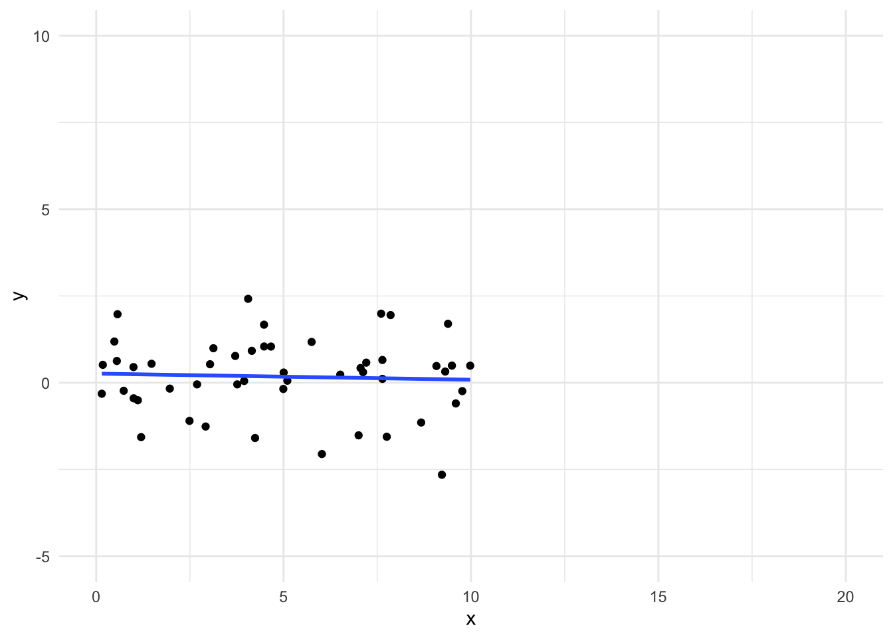
What do you notice about:
- Direction of relationship (positive, negative, or neutral)
- Form of relationship (linear, curved, none, or other)
- Strength of relationship (compactness around the average relationship)
- Unusual features (outliers, differences in variability in \(y\) variable across different values of \(x\) variable)
How might you use this information to determine shirt sizes for your new business venture? Come up with a few ways you could define sizes such as small, medium, large, extra large, etc.
Suppose instead of Chest in inches and Neck size in cm, we plotted Chest in inches and Neck size in inches.
Does the strength of the relationship change after transformation?
Look at the plot in inches below. Does this plot look the same as the centimeters plot?
body %>%
ggplot(aes(x = Neck/2.54, y = Chest/2.54)) +
geom_point(color = 'steelblue') +
xlab('Neck size (in)') +
ylab('Chest size (in)') +
theme_minimal()
You should see that the x-axes changed but the overall shape of the plot stayed the same. Thus, the strength of the relationship was not affected by tranforming neck size from centimeters to inches (by dividing by 2.54).
2.8.2 Correlation Coefficient
Since shifting (adding or subtracting) and scaling (multiplying or dividing) make no difference in the strength of the relationship, let’s standardize both variables into z-scores (recall z-scores from Section 2.6.5).
Below we plot Neck and Chest sizes after changing them to z-scores with the function scale() and we add some color:
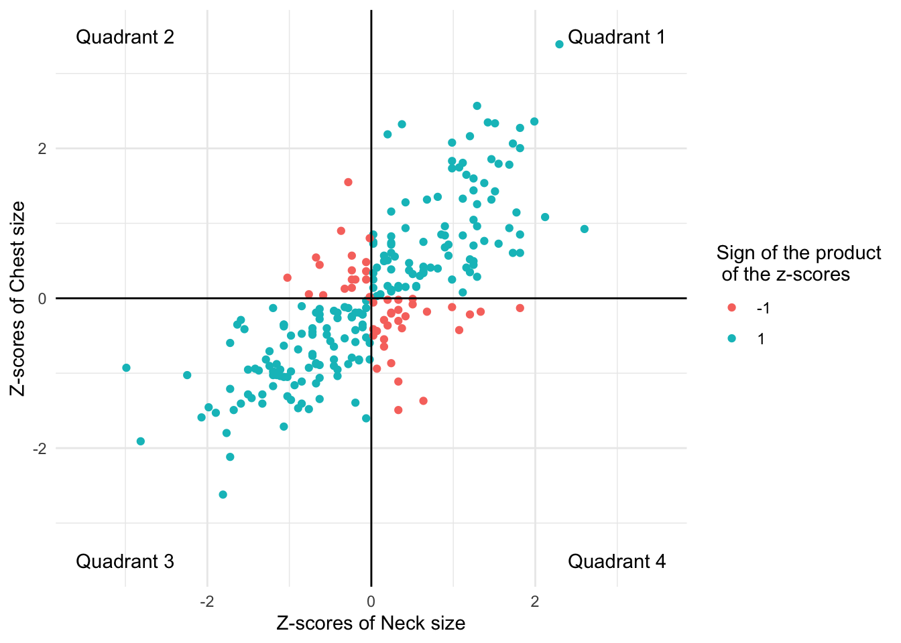
The blue points in the upper right (Quadrant 1) and lower left (Quadrant 3) quadrants are either both positive or both negative in their z-score values. This means that those individuals are above average in both Neck Size and Chest Size (upper right), or they are below average in both Neck Size and Chest Size (lower left). If we multiply the z-scores of the Neck and Chest values for the blue points, we will get a positive value.
The red points in the upper left (Quadrant 2) and lower right (Quadrant 4) quadrants are positive in one and negative in the other. This means that those individuals are either above average in Neck Size but below average in Chest Size (lower right) or they are below average in Neck Size and above average in Chest Size (upper left). If we multiply the z-scores of the Neck and Chest values for the red points, we will get a negative value.
If we were to have a weaker positive relationship, how would this plot change?
If we were to have a stronger positive relationship, how would this plot change?
If we were to have a negative relationship, how would this plot change?
We want one number to represent strength and direction of a linear relationship.
- Points in Quadrants 1 and 3 (blue) have the z-scores of the same sign.
- Points in Quadrants 2 and 4 (red) have z-scores of the opposite sign.
What if we took the product of the \(z\)-scores for \(x\) and \(y\) variables?
Situation 1: An individual far above the means in both the \(x\) and \(y\) variables or far below the means in both the \(x\) and \(y\) variables has a very large, positive product of z-scores.
Situation 2: An individual far above the mean in \(x\) and far below the mean in \(y\) has a very large, negative product of z-scores. (The same goes for low \(x\) and high \(y\).)
The (almost) average of products of the \(z\)-scores is the correlation coefficient,
\[ r_{x,y} = \frac{\sum z_x z_y}{n-1} \]
We notate the correlation coefficient between variables \(x\) and \(y\) as \(r_{x,y}\).
Some observations:
- If most of our data points follow Situation 1, the correlation coefficient is an average of mostly large positive values. Thus the correlation coefficient will be large and positive.
- If most of our data points follow Situation 2, the correlation coefficient is an average of mostly large negative values. Thus the correlation coefficient will be large and negative.
- If about an equal number of data points follow Situation 1 and Situation 2, we will be balancing positive and negative numbers, which results in a value close to zero. Thus, the correlation coefficient will be close to zero.
Which points contribute the most to this average?
Let’s look at the correlation for the entire sample first. Then let’s calculate the correlation for individuals around the mean Neck size.
## cor(Neck, Chest)
## 1 0.7688109body %>%
filter(Neck > 35 & Neck < 40) %>% # Keep individuals with Neck size between 35cm and 40cm
summarize(cor(Neck, Chest)) # Only middle subset of data points used in calculation## cor(Neck, Chest)
## 1 0.5658835The value is much larger and more positive when all data points are used. The points that are far from the means of x and y have a larger product of z-scores and thus increase the correlation coefficient value.
2.8.3 Properties
\(-1 \leq r \leq 1\) (due to the Cauchy-Schwarz Inequality for those are inclined)
The sign of \(r\) goes with the direction of the relationship.
\(r_{x,y} = r_{y,x}\), it doesn’t matter which variable is \(x\) and which is \(y\).
\(r_{ax+b, cy+d} = r_{x,y}\), linear change of scale doesn’t affect \(r\). Why?
\(r\) measures strength of linear relationship (not a curved relationship).
One outlier can completely change \(r\).
Let’s look at a few scatterplot examples and the corresponding correlation.
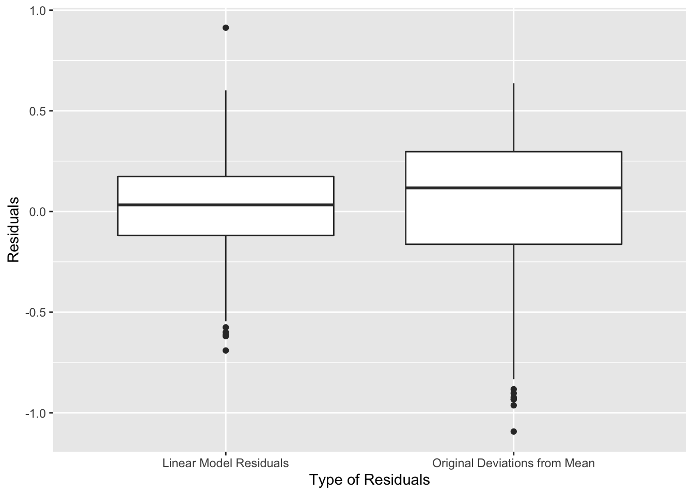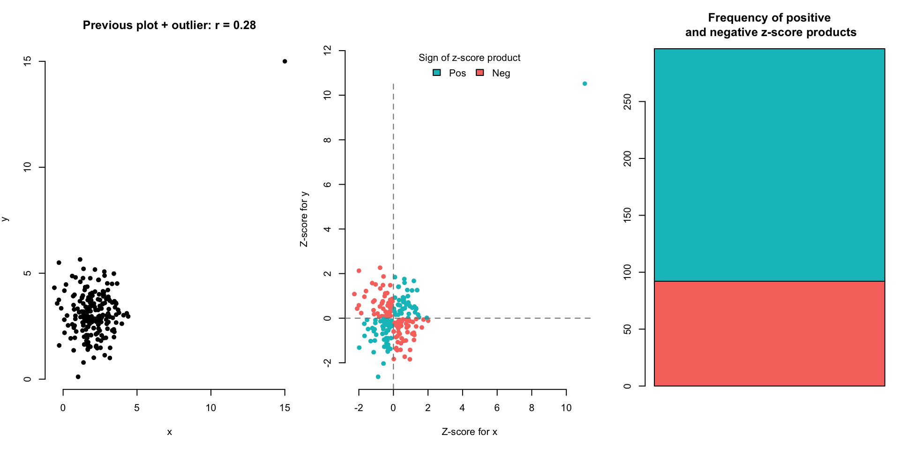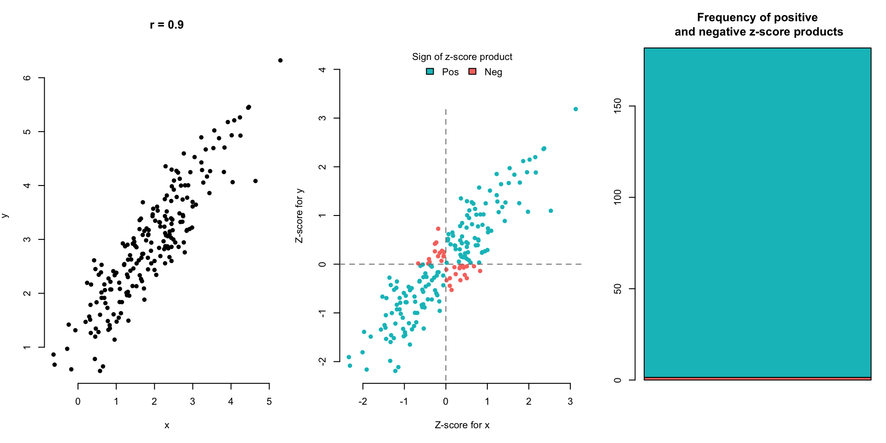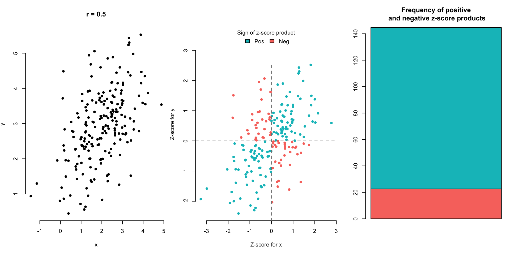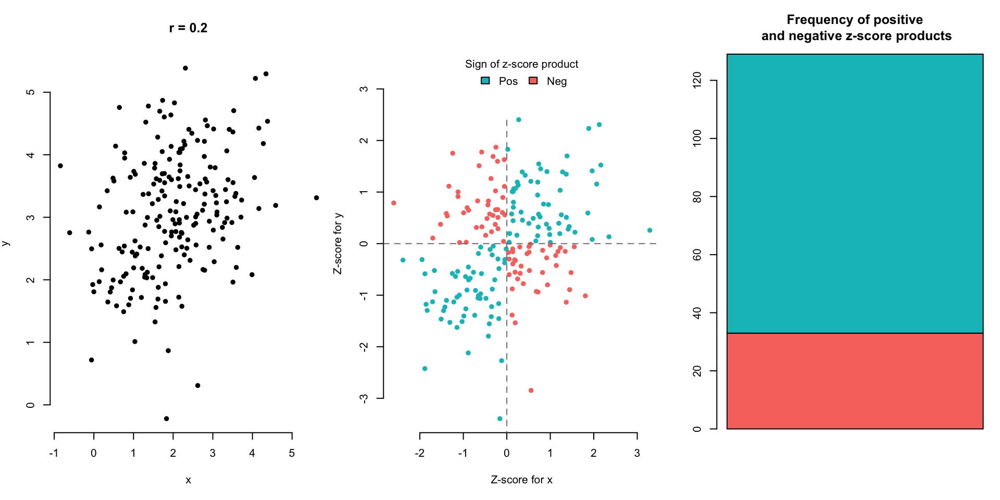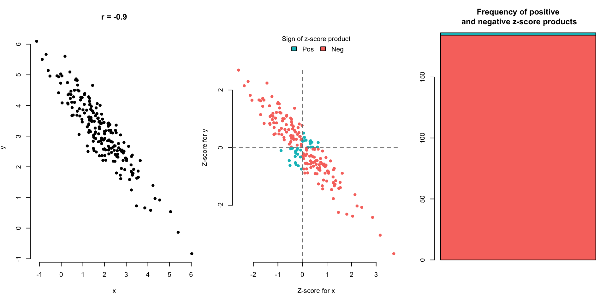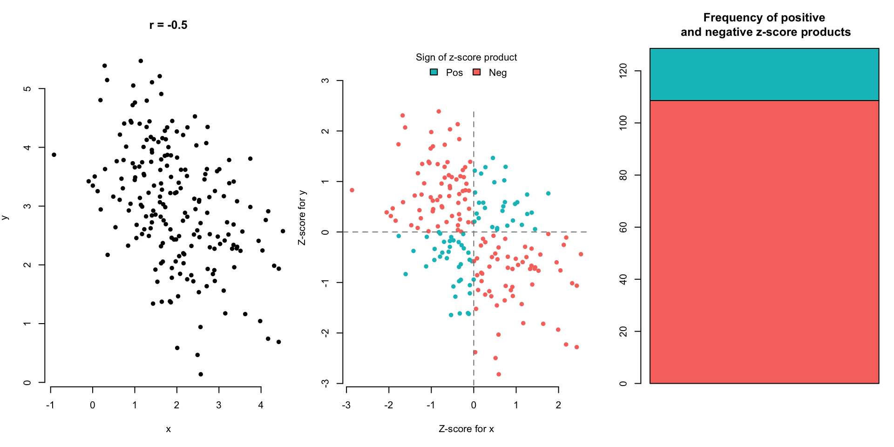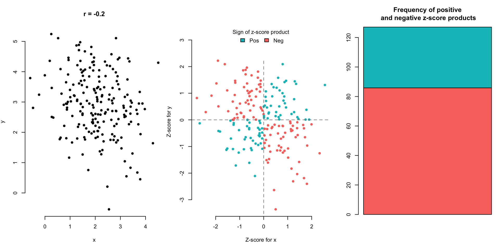
(Optional) Here are other equivalent expressions for \(r\) for the mathematically intrigued:
\[ r = \frac{\sum z_x z_y}{n-1} \] \[ = \frac{\sum{\frac{(x_i-\bar{x})}{s_x}\times\frac{(y_i-\bar{y})}{s_y}}}{n-1}\] \[= \frac{\sum{(x_i-\bar{x})(y_i-\bar{y})}}{(n-1) s_x s_y}\] \[= \frac{\sum{(x_i-\bar{x})(y_i-\bar{y})}}{{(n-1)\sqrt{\sum{\frac{(x_i-\bar{x})^2}{n-1}}}}{\sqrt{\sum{\frac{(y_i-\bar{y})^2}{n-1}}}}}\] \[=\frac{\sum{(x_i-\bar{x})(y_i-\bar{y})}}{{\sqrt{\sum{(x_i-\bar{x})^2}}}{\sqrt{\sum{(y_i-\bar{y})^2}}}}\] \[=\frac{\sum{(x_i-\bar{x})(y_i-\bar{y})}}{{\sqrt{\sum{(x_i-\bar{x})^2\sum{(y_i-\bar{y})^2}}}}}\]
2.8.4 Is correlation always the right way to judge strength?
The plot below shows the relationship between brownie quality and oven temperature at which the brownie is baked.
The correlation coefficient is near 0, but it doesn’t mean that there’s no relationship. We can clearly see a quadratic relationship, but there’s not a linear relationship.
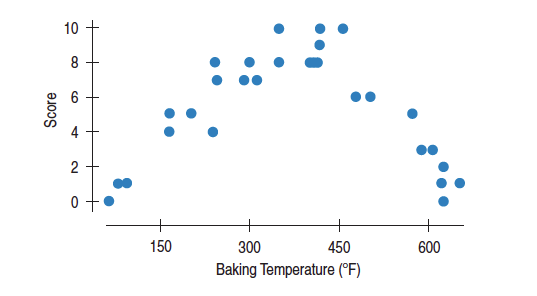
The correlation coefficient, \(r\), is more formally called the Pearson correlation coefficient, named after Karl Pearson who published this work in 1895. Read more about this measure of linear relationship here.